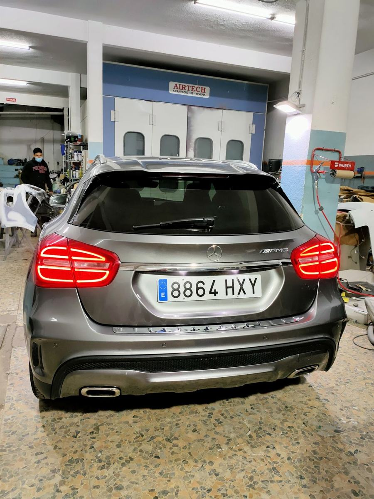
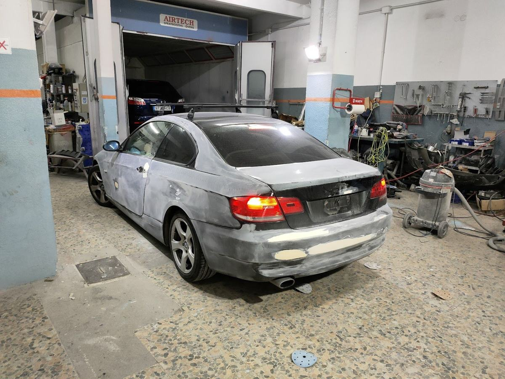
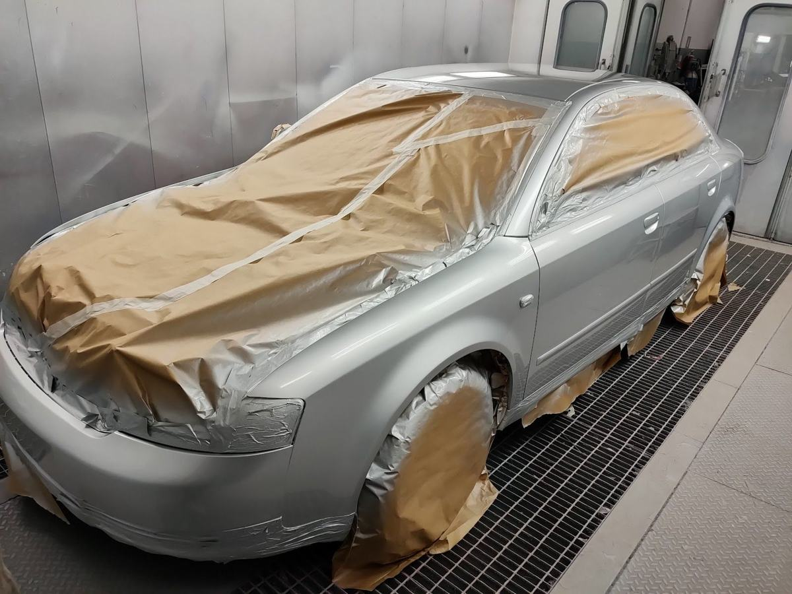
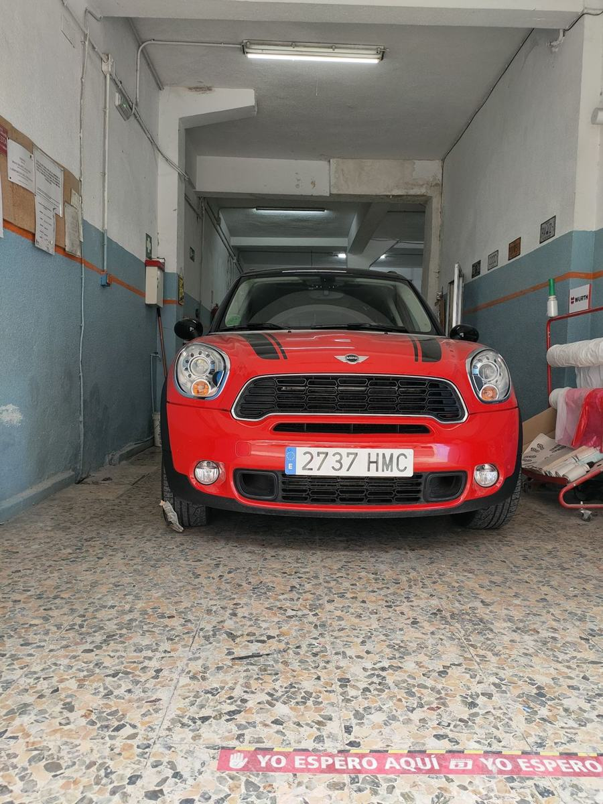
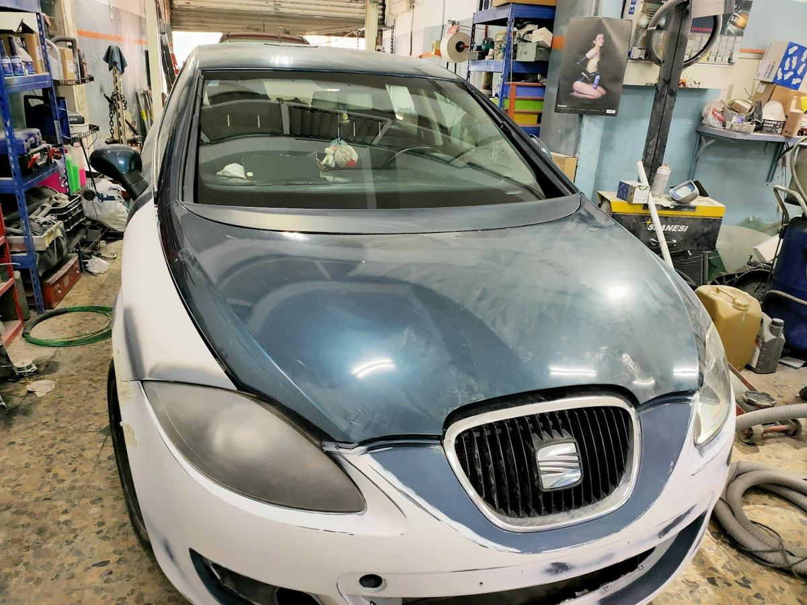
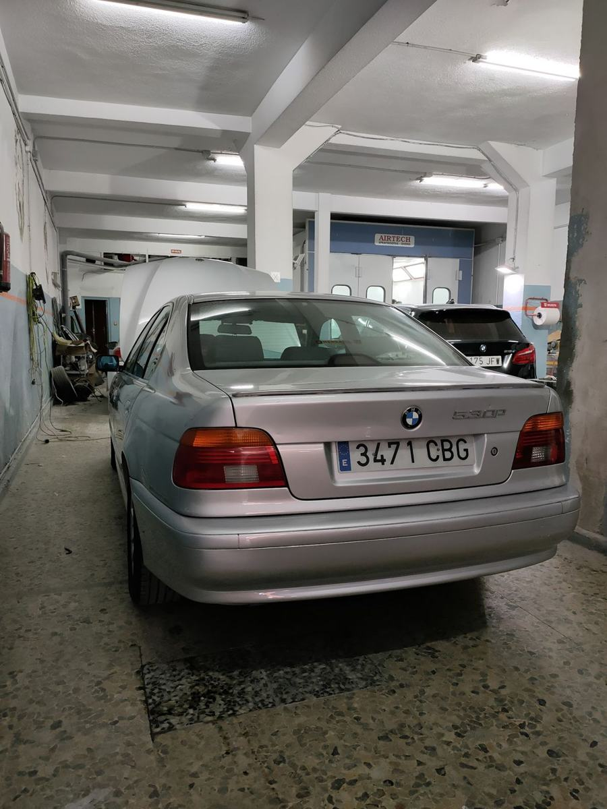
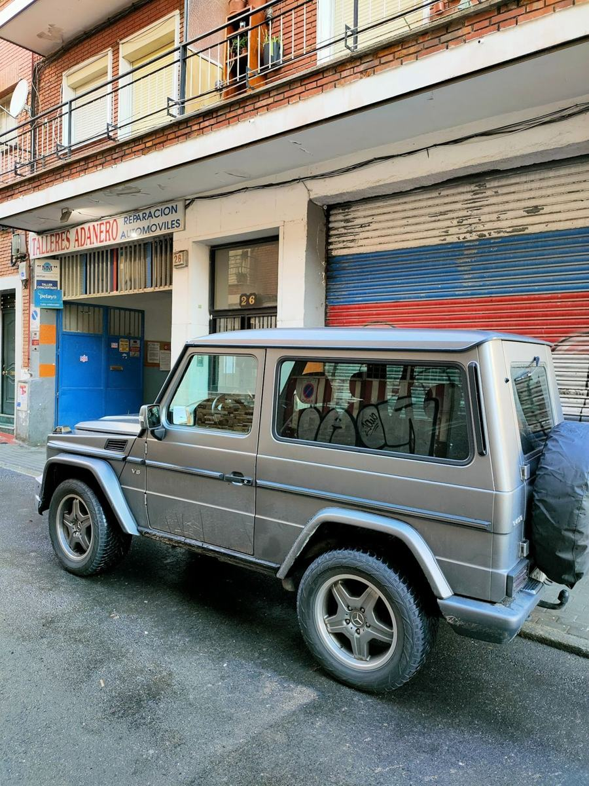
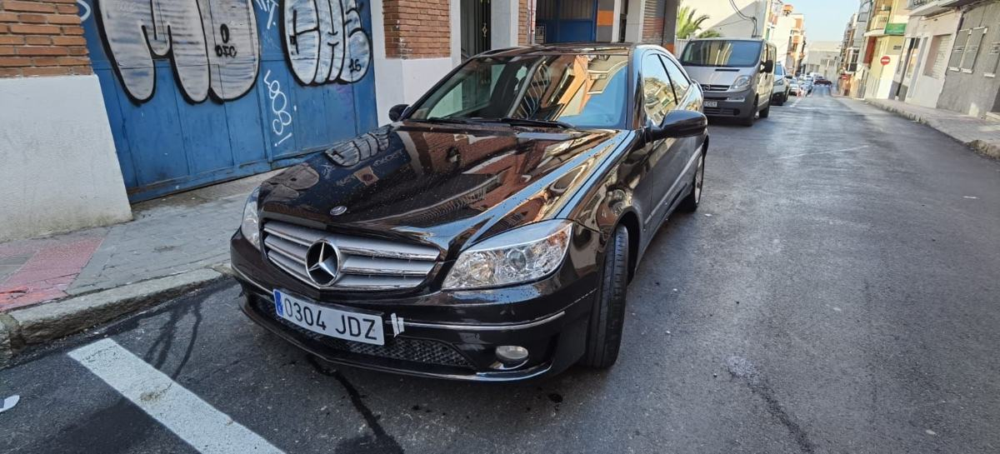

Desabollado, pintura en cabina y acabado brillante, en la calle de la Zarzuela 26. Tráelo y te damos presupuesto sin compromiso.
Pedir presupuesto por WhatsAppVer trabajos



| Lunes | 8:00–16:00 |
|---|---|
| Martes | 8:00–16:00 |
| Miércoles | 8:00–16:00 |
| Jueves | 8:00–16:00 |
| Viernes | 8:00–16:00 |
| Sábado | Cerrado |
| Domingo | Cerrado |
Polígono Industrial de Aguacate, C. de la Zarzuela
26, Madrid



